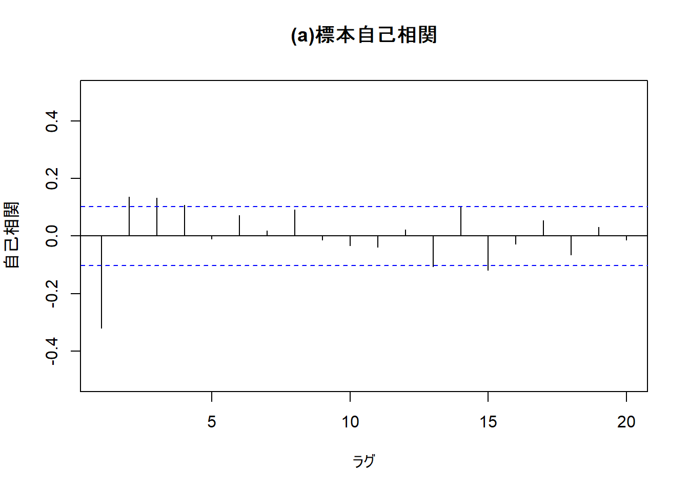
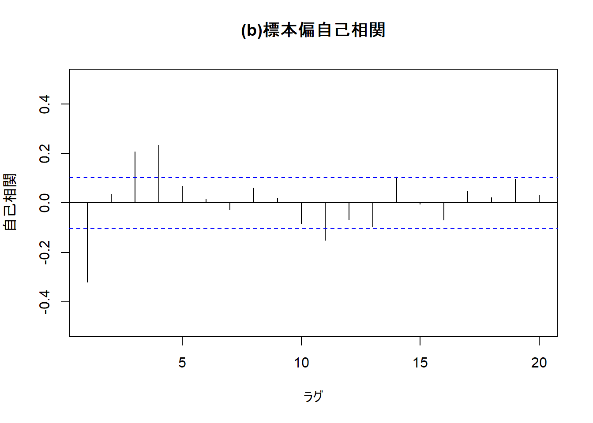
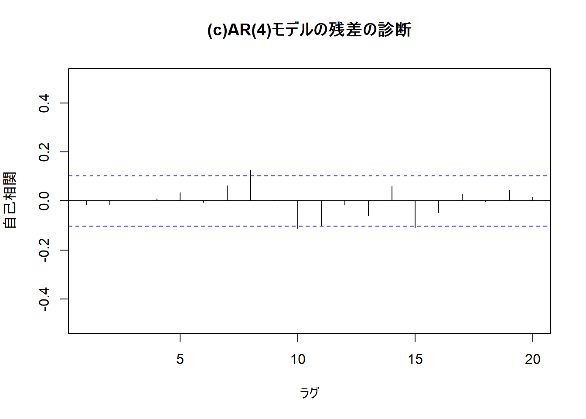
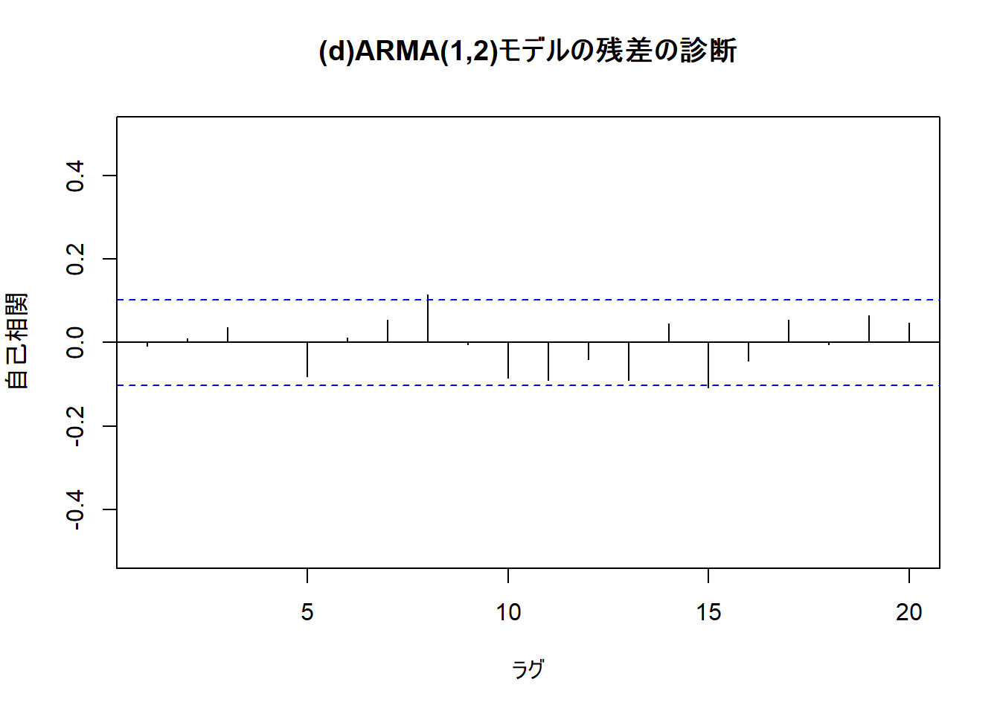

沖本本 第二章
2. 問題(p.54)
どうも、HRYです。 前回の投稿から間がかなり空いてしまいましたが、つづきの第2章の章末問題をやっていこうと思います。
2.1. AR(2)過程(2.18)の定常条件が(2.19)で与えられることを確認せよ。
まず、(2.18)のAR(2) モデルが、 \[ y_{t}=c+\phi_{1} y_{t-1}+\phi_{2} y_{t-2}+\epsilon_{t}, \epsilon_{t} \sim W . N .\left(\sigma^{2}\right) \] がこちらで、その定常条件が以下に示す(2.19)の3つの条件であることを確認します。 \[ \begin{array}{l}{\text { 1. } \phi_{2}<1+\phi_{1}} \\ {\text { 2. } \phi_{2}<1-\phi_{1}} \\ {\text { 3. } \phi_{2}>-1}\end{array} \] まず対象とするAR(2) 過程の特性方程式は(2.15)の一般式から、 \[ 1-\phi_{1} z-\phi_{2} z^{2}=0 \] となります。問題を解きやすくするため、\(z^{-1}=\lambda\)とおくと、 \[ \lambda^{2}-\phi_{1} \lambda-\phi_{2}=0 \] と式を変形できます。
特性方程式の解\(z\)のすべての絶対値が1より大きくなるとき、その過程は定常となるので、上記の2次方程式の解\(\lambda\)が、 \[ |z|>1 \Leftrightarrow|\lambda|=\left|z^{-1}\right|<1 \] を満たせばよいということになります。
この2次方程式の解\(\lambda\)は、 \[ \lambda_{1,2}=\frac{\phi_{1} \pm \sqrt{\phi_{1}^{2}+4 \phi_{2}}}{2} \] です。
そして、\(|\lambda|<1\)から、 \[ \begin{aligned}-1<\frac{\phi_{1} \pm \sqrt{\phi_{1}^{2}+4 \phi_{2}}}{2} &<1 \\ \Rightarrow-2<\phi_{1} \pm \sqrt{\phi_{1}^{2}+4 \phi_{2}} &<2 \end{aligned} \] という不等式が導かれます。
\(\phi_{1}^{2}+4 \phi_{2}\)が正、つまり\(\lambda_{1,2}\)が実数である場合、 \[ \begin{aligned} \phi_{1}+\sqrt{\phi_{1}^{2}+4 \phi_{2}} &<2 \\ \Rightarrow \sqrt{\phi_{1}^{2}+4 \phi_{2}} &<2-\phi_{1} \\ \Rightarrow \phi_{1}^{2}+4 \phi_{2} &<\left(2-\phi_{1}\right)^{2} \\ \Rightarrow \phi_{1}^{2}+4 \phi_{2} &<4-4 \phi_{1}+\phi_{1}^{2} \\ \Rightarrow \phi_{2} &<1-\phi_{1} \end{aligned} \] から、上記の2番目の条件が導かれます。
そして、\(-2<\phi_{1}-\sqrt{\phi_{1}^{2}+4 \phi_{2}}\)から、同様にして \[ \phi_{2}<1+\phi_{1} \] 上記の1番目の条件も導くことができます。
一方で、\(\phi_{1}^{2}+4 \phi_{2}\)が負、つまり\(\lambda_{1,2}\)が複素数である場合、\(\phi_{1}^{2}<-4 \phi_{2}\)であり、解\(\lambda_{1,2}\)は \[ \lambda_{1,2}=\phi_{1} / 2 \pm i \sqrt{-\left(\phi_{1}^{2}+4 \phi_{2}\right)} / 2 \] となり、両辺を二乗すると \[ \lambda^{2}=\left(\phi_{1} / 2\right)^{2}+\left(\sqrt{-\left(\phi_{1}^{2}+4 \phi_{2}\right)} / 2\right)^{2}=\phi_{1}^{2} / 4-\left(\phi_{1}^{2}+4 \phi_{2}\right) / 4=-\phi_{2} \] となります。
\(|\lambda|<1\)より、 \[ -\phi_2<1 \Leftrightarrow \phi_2>-1 \] という不等式が導かれ、上記3番目の条件が導かれます。
以上から、AR(2) 過程の定常条件は \[
\begin{array}{l}{\text { 1. } \phi_{2}<1+\phi_{1}} \\ {\text { 2. } \phi_{2}<1-\phi_{1}} \\ {\text { 3. } \phi_{2}>-1}\end{array}
\] であることが確認できました。 因みに、この条件を図示するとこのようになります。 
引用元：SlackExchage
2.2. 次のモデルの中から、定常なモデルと反転可能なモデルをすべて選択せよ。
\[ y_{t}=2+\epsilon_{t}, \epsilon_{t} \sim W . N .\left(\sigma^{2}\right) ...(a) \] \[ y_{t}=\epsilon_{t}+\epsilon_{t-1}, \epsilon_{t} \sim W . N .\left(\sigma^{2}\right) ...(b) \] \[ y_{t}=\epsilon_{t}+0.3\epsilon_{t-1}+0.7\epsilon_{t-2}, \epsilon_{t} \sim W . N .\left(\sigma^{2}\right) ...(c) \] \[ y_{t}=0.5y_{t-1}+\epsilon_{t}, \epsilon_{t} \sim W . N .\left(\sigma^{2}\right) ...(d) \] \[ y_{t}=1.3y_{t-1}-0.4y_{t-2}+\epsilon_{t}, \epsilon_{t} \sim W . N .\left(\sigma^{2}\right) ...(e) \] \[ y_{t}=y_{t-1}+\epsilon_{t}+0.5\epsilon_{t-1}, \epsilon_{t} \sim W . N .\left(\sigma^{2}\right) ...(f) \] この問題で確認することは3点です。
1. 対象とするMA過程であれば、その過程は常に定常であり、MA特性方程式の解のすべての解が1より大きいか確認する。もし、そのようであれば対象過程は定常かつ反転可能である。
2. 対象とする過程がAR過程であれば、AR特性方程式の解がすべて1より大きい（定常性）かどうか確認する。
3. 対象とする過程がARMA過程である場合、そのモデルのMA部分について1の反転性の確認、AR部分について2の定常性の確認を行う。
MA特性方程式は \[ 1+\theta_{1} z+\ldots+\phi_{p} z^{p}=0 \] AR特性方程式は \[ 1-\phi_{1} z-\ldots-\phi_{p} z^{p}=0 \] です。
モデル(a)について
これは、MA過程でも、AR過程でもないモデルです。従って、1次以降に自己共分散を持たず(\(\gamma_k=0(k=1,2,\ldots)\))、時間に依存しない期待値\(\mu\)をもつはずです。 \[ \begin{aligned} \operatorname{Cov}(y_t, y_{t-k}) &= \mathrm{E}[(y_t-\mu_t)(y_{t-k}-\mu_{t-k})] \\ &=E[(2+\epsilon_t-2)(2+\epsilon_{t-k}-2)] \\ &=E[(\epsilon_t-0)(\epsilon_{t-k}-0)] \\ &=\gamma_k \end{aligned} \] \[ \begin{aligned} \mathrm{E}(y_t) &= \mathrm{E}(2+\epsilon_t) \\ &= \mathrm{E}(2) + \mathrm{E}(\epsilon_t) \\ &= 2+0 \\ &= 2 \\ &= \mu \end{aligned} \] という定常性の定義が成り立つので、モデル(a)は定常過程です。しかし、擾乱項についてARモデルの形に変形できないので、反転可能ではありません。
モデル(b)について
このモデルは、MA(1)過程です。
MA特性方程式は \[ \begin{aligned} 1+1\times z &= 0 \\ z &= -1 \end{aligned} \] 従って、MA特性方程式のすべての解の絶対値が1より大きいという条件を満たさないので、モデル(b)は定常かつ反転不可能なモデルです。
モデル(c)について
このモデルは、MA(2)過程です。
MA特性方程式は \[ \begin{aligned} 1-0.3z+0.7z^2 &= 0 \\ 7z^2-3z+10&=0 \\ z_{1,2} &= \frac{3 \pm i\sqrt{-271}}{14} \\ |z| &= \sqrt{(3/14)^2+(-271)^2} \\ &\simeq 271 > 1 \end{aligned} \] 解が複素数解になるが、絶対値が1より大きいので、モデル(c)は定常かつ反転可能なモデルです。
モデル(d)について
このモデルは、AR(1)過程です。
AR特性方程式は \[ \begin{aligned} 1-0.5z &= 0 \\ z &= 2 > 1 \end{aligned} \] であるので、モデル(d)は定常かつ反転不可能なモデルです。
モデル(e)について
このモデルは、AR(2) 過程です。
この問いでは、問1で確認した定常条件を用います。 \[ 1+\phi_1 = 1+1.3 = 2.3 > \phi_2 \\ 1-\phi_1 = 1-1.3 = -0.3 > \phi_2 \\ \phi_2 = -0.4 > -1 \] となり、3条件を満たすので、モデル(e)は定常かつ反転不可能なモデルです。
モデル(f)について
このモデルは、ARMA(1,1)過程です。
まず、AR部分の特性方程式は \[ \begin{aligned} 1-1\cdot z &= 0 \\ z &= 1 \end{aligned} \] となり、絶対値が1より小さいので非定常であると分かります。
そして、MA部分の特性方程式は \[ \begin{aligned} 1+0.5z &= 0 \\ z &= -2 \Rightarrow |z| > 1 \end{aligned} \] となり、反転可能であることが分かります。
従って、モデル(f)は非定常かつ反転可能なモデルです。
まとめ
以上より、
- 定常なモデル：モデル(f)以外のすべて
- 反転可能なモデル：モデル(c), (f)
という結論になります。
2.3. MA(2)過程 \[y_{t}=\mu+\epsilon_{t}+\theta_1\epsilon_{t-1}+\theta_2\epsilon_{t-2}, \epsilon_{t} \sim W . N .\left(\sigma^{2}\right)\] について、以下の問いに答えよ。
まず、問題に入る前に定理2.1(p.24)のMA(q)過程の性質の確認をしておきましょう。
\[ \begin{array}{l} {\text {1. } E(y_{t})=\mu} \\ {\text {2. } \gamma_{0}=\operatorname{Var}\left(y_{t}\right)=\left(1+\theta_{1}^{2}+\cdots+\theta_{q}^{2}\right) \sigma^{2}} \\ {\text {3. } \gamma_{k}=\left\{\begin{array}{ll}{\left(\theta_{k}+\theta_{1} \theta_{k+1}+\cdots+\theta_{q-k} \theta_{q}\right) \sigma^{2},} & {1 \leq k \leq q} \\ {0,} & {k \geq q+1}\end{array}\right.} \\ {\text {4. } MA過程は常に定常} \\ {\text {5. } \rho_{k}=\left\{\begin{array}{ll}{\frac{\theta_{k}+\theta_{1} \theta_{k+1}+\cdots+\theta_{q-k} \theta_{q}}{1+\theta_{1}^{2}+\cdots+\theta_{q}^{2}},} & {1 \leq k \leq q} \\ {0,} & {k \geq q+1}\end{array}\right.} \end{array} \]
(1) \(E(y_{t})\)を求めよ。
MA(q)過程の性質1より、\(E(y_{t}) = \mu\)となります。
(2) \(\gamma_{0}\)を求めよ。
性質2より、\(\gamma_{0} = (1 + \theta_{1}^{2} + \theta_{2}^{2}) \sigma^{2}\)となります。
(3) \(\gamma_{1}\)を求めよ。
性質3より、\(\gamma_{1} = (\theta_{1} + \theta_{1} \theta_{2}) \sigma^{2}\)となります。
(4) \(\gamma_{2}\)を求めよ。
性質3より、\(\gamma_{2} = (\theta_{1} + \theta_{1}\theta_{2} + \theta_{2}) \sigma^{2}\)となります。
(5) \(k \geq 3\)に対して、\(\gamma_{k} = 0\)となることを確認せよ。
\(k \geq 3\)として、 \[ \begin{aligned} \gamma_{k} &= \operatorname{Cov}(y_t, y_{t-k}) \\ &= \operatorname{Cov}(\mu+\epsilon_t+\theta_1\epsilon_{t-1}+\theta_2\epsilon_{t-2}, \mu+\epsilon_{t-k}+\theta_1\epsilon_{t-k-1}+\theta_{2}\epsilon_{t-k-2}) \\ &= \operatorname{Cov}(\epsilon_t, \epsilon_{t-k}) + \operatorname{Cov}(\epsilon_t, \theta_1\epsilon_{t-k-1}) + \operatorname{Cov}(\epsilon_t, \theta_{2}\epsilon_{t-k-2}) \\ &+ \operatorname{Cov}(\theta_1\epsilon_{t-1}, \epsilon_{t-k}) + \operatorname{Cov}(\theta_1\epsilon_{t-1}, \theta_1\epsilon_{t-k-1}) + \operatorname{Cov}(\theta_1\epsilon_{t-1}, \theta_2\epsilon_{t-k-2}) \\ &+ \operatorname{Cov}(\theta_2\epsilon_{t-2}, \epsilon_{t-k}) + \operatorname{Cov}(\theta_2\epsilon_{t-2}, \theta_1\epsilon_{t-k-1}) + \operatorname{Cov}(\theta_2\epsilon_{t-2}, \theta_2\epsilon_{t-k-2}) \\ &= 0 (\because \epsilon の自己共分散は0) \end{aligned} \]
2.4. ARMA(1,1)過程 \[y_{t} = c + y_{t-1} + \epsilon_{t} + \theta_1\epsilon_{t-1}, \epsilon_{t} \sim W . N .\left(\sigma^{2}\right)\]について、以下の問いに答えよ。
こちらでも、定理2.3(p.34)の定常ARMA(p,q)過程の性質について確認しておきましょう。 \[ \begin{array}{l} {\text {1. } \mu=E\left(y_{t}\right)=\frac{c}{1-\phi_{1}-\phi_{2}-\cdots \phi_{p}}} \\ {\text {2. } q+1次以降の自己共分散と自己相関はy_tが従うARMA過程のAR部分と} \\ {\text { } 同一の係数をもつ以下のp次差分方程式（ユール・ウォーカー方程式）に従う。}\\ \begin{aligned} \gamma_{k} &=\phi_{1} \gamma_{k-1}+\cdots+\phi_{p} \gamma_{k-p}, \quad k \geq q+1 \\ \rho_{k} &=\phi_{1} \rho_{k-1}+\cdots+\phi_{p} \rho_{k-p}, \quad k \geq q+1 \end{aligned} \\ {\text {3. } ARMA過程の自己相関は指数的に減衰する。} \end{array} \]
(1)定常条件を求めよ。
AR過程部分の特性方程式より、 \[ \begin{aligned} 1 - \phi_1z &= 0 \\ z &= \phi_1^{-1} \end{aligned} \] \(|z| > 1\)となればよいので、定常条件は \[ |\phi_1^{-1}| > 1 \Leftrightarrow |\phi_1| < 1 \] となります。
(2)反転可能条件を求めよ。
MA過程部分の特性方程式より、 \[ \begin{aligned} 1 + \theta_1z &= 0 \\ z &= \theta_1^{-1} \end{aligned} \] 同様にして、\(|\theta_1| < 1 ~ (\because |z| < 1)\)
(3)\(\mu\)を求めよ。
定常ARMA(p, q)過程の性質1(p.35)より、 \[ \mu = \frac{c}{1 - \phi_1} \] となります。
(4)\(\gamma_0\)を求めよ。(ヒント：\(\operatorname{Cov}(y_{t-1}, \epsilon_t)=0, ~ \operatorname{Cov}(y_{t-1}, \epsilon_{t-1})=\sigma^{2}\)に注意すること)
\[ \begin{aligned} \gamma_{0t} &= \operatorname{Var}(y_t) \\ &= \operatorname{Var}(y_{t-1} + \epsilon_t + \theta_1\epsilon_{t-1}) \\ &= \phi_1^{2}\operatorname{Var}(y_{t-1}) + \operatorname{Var}(\epsilon_t) + \theta_1^{2}\operatorname{Var}(\epsilon_{t-1}) \\ &+ 2\phi_1\operatorname{Cov}(y_{t-1}, \epsilon_t) + 2\phi_1\theta_1\operatorname{Cov}(y_{t-1}, \epsilon_{t-1}) + 2\theta_1\operatorname{Cov}(\epsilon_t, \epsilon_{t-1}) \\ &= \phi_1^2\operatorname{Var}(y_{t-1}) + (1+\theta_1^{2}+2\phi_1\theta_1)\sigma^2 \end{aligned} \] \(y_t\)が定常な場合、\(\gamma_0 = \operatorname{Var}(y_t) = \operatorname{Var}(y_{t-1})\)なので、 \[ \begin{aligned} (1-\phi_1^{2})\gamma_0 &= (1+\theta_1^2+2\phi_1\theta_1)\sigma^2 \\ \gamma_0 &= \frac{(1+\theta_1^2+2\phi_1\theta_1)\sigma^2}{1-\phi_1^2} \end{aligned} \] となります。
(5)\(\gamma_1\)を求めよ。
\[ \begin{aligned} \gamma_{1t} &= \operatorname{Cov}(y_t, y_{t-1}) \\ &= \operatorname{Cov}(\phi_1y_{t-1}+\epsilon_t+\theta_1\epsilon_{t-1}, ~ y_{t-1}) \\ &= \operatorname{Cov}(\phi_1y_{t-1}, y_{t-1}) + \operatorname{Cov}(\epsilon_t, y_{t-1}) + \operatorname{Cov}(\theta_1\epsilon_{t-1}, y_{t-1}) \\ &= \phi_1\operatorname{Var}(y_{t-1}) + \theta_1\sigma^2 \end{aligned} \] 先程の（4）の\(\gamma_0\)を用いて、 \[ \begin{aligned} \gamma_1 &= \phi_1\gamma_0 + \theta_1\sigma^2 ~ (\because y_tは定常) \\ &= \frac{(1+\theta_1^2+2\phi_1\theta_1)\phi_1\sigma^2}{1-\phi_1^2} + \frac{\theta_1\sigma^2-\theta_1\phi_1^2\sigma^2}{1-\phi_1^2} \\ &= \frac{(\phi_1+\theta_1^2\phi_1+\theta_1\phi_1^2+\theta_1)\sigma^2}{1-\phi_1^2} \end{aligned} \] となります。
0.0.1 (6)\(\phi_1\)を求めよ。
\[ \begin{aligned} \rho_1 &= \frac{\gamma_1}{\gamma_0} \\ &= \frac{(\phi_1+\theta_1^2\phi_1+\theta_1\phi_1^2+\theta_1)\sigma^2}{1-\phi_1^2} \cdot \frac{1-\phi_1^2}{(1+\theta_1^2+2\phi_1\theta_1)\sigma^2} \\ &= \frac{\phi_1+\theta_1^2\phi_1+\theta_1\phi_1^2+\theta_1}{1+2\phi_1\theta_1+\theta_1^2} \end{aligned} \]
(7)ユール・ウォーカー方程式を用いて、\(k \geq 2\)において\(\rho_k\)を求めよ。
性質2(p.35)より、\(k \geq 2\)において、 \[ \rho_k = \phi_1\rho_{k-1} \] これは初項\(\phi_1\rho_1\), 公比\(\phi_1\)の等比数列なので、 \[ \begin{aligned} \rho_k &= \phi_1\rho_1 \cdot \phi_1^{k-2} \\ &= \left( \frac{\phi_1+\theta_1^2\phi_1+\theta_1\phi_1^2+\theta_1}{1+2\phi_1\theta_1+\theta_1^{2}} \right)\phi_1^{k-1} \end{aligned} \] となります。
2.5 問題1.5でダウンロードしたデータを用いて以下の問いに答えよ。
ここで、いよいよRの出番です。
(1)表2.3と図2.5の結果を比較せよ。
# 外部パッケージの読み込み
library(readr)
# 1.3のデータの読み込み
economicdata <- read_csv("economicdata.csv")## Parsed with column specification:
## cols(
## date = col_character(),
## topix = col_double(),
## exrate = col_double(),
## indprod = col_double(),
## cpi = col_double(),
## saunemp = col_double(),
## intrate = col_double()
## )# indprod変数の対数差分系列(鉱工業生産指数の成長率)
diff_indprod <- diff(economicdata$indprod)
# diff_indprodのAR(4)モデル
ar_4 <- arima(diff_indprod, order = c(4, 0, 0))
# diff_indprodのARMA(1,2)モデル
arma_1_2 <- arima(diff_indprod, order = c(1, 0, 2))
# MA(3)
ma_3 <- arima(diff_indprod, order = c(0, 0, 3))
# ARMA(1, 1)
arma_1_1 <- arima(diff_indprod, order = c(1, 0, 1))
# ARMA(2, 1)
arma_2_1 <- arima(diff_indprod, order = c(2, 0, 1))
# ARMA(2, 2)
arma_2_2 <- arima(diff_indprod, order = c(2, 0, 2))
# 図2.5
## (a)標本自己相関
acf(diff_indprod, type = "correlation", main="(a)標本自己相関",
xlim=c(1, 20), ylim=c(-0.5, 0.5), xlab="ラグ", ylab="自己相関")
## (b)標本偏自己相関
pacf(diff_indprod, main="(b)標本偏自己相関",
xlim=c(1, 20), ylim=c(-0.5, 0.5), xlab="ラグ", ylab="自己相関")
## (c)AR(4)モデルの残差の診断
acf(ar_4$residuals, type = "correlation", main="(c)AR(4)モデルの残差の診断",
xlim=c(1, 20), ylim=c(-0.5, 0.5), xlab="ラグ", ylab="自己相関")
## (d)ARMA(1,2)モデルの残差の診断
acf(arma_1_2$residuals, type = "correlation", main="(d)ARMA(1,2)モデルの残差の診断",
xlim=c(1, 20), ylim=c(-0.5, 0.5), xlab="ラグ", ylab="自己相関") これらのコードから、図2.5の4種類のグラフと同様なものが得られます。表2.3については、
# AIC
aic_ar4 <- round(ar_4$aic, digits = 0)
aic_ma3 <- round(ma_3$aic, digits = 0)
aic_arma11 <- round(arma_1_1$aic, digits = 0)
aic_arma21 <- round(arma_2_1$aic, digits = 0)
aic_arma12 <- round(arma_1_2$aic, digits = 0)
aic_arma22 <- round(arma_2_2$aic, digits = 0)
vec_aic <- c(aic_ar4, aic_ma3, aic_arma11, aic_arma21, aic_arma12, aic_arma22)
# SIC(BIC)
sic_ar4 <- round(BIC(ar_4), digits = 0)
sic_ma3 <- round(BIC(ma_3), digits = 0)
sic_arma11 <- round(BIC(arma_1_1), digits = 0)
sic_arma21 <- round(BIC(arma_2_1), digits = 0)
sic_arma12 <- round(BIC(arma_1_2), digits = 0)
sic_arma22 <- round(BIC(arma_2_2), digits = 0)
vec_sic <- c(sic_ar4, sic_ma3, sic_arma11, sic_arma21, sic_arma12, sic_arma22)
# 表2.3の作成
table_ic <- rbind.data.frame(vec_aic, vec_sic)
table_ic <- cbind(c("AIC", "SIC"), table_ic)
colnames(table_ic) <- c("モデル", "AR(4)", "MA(3)", "ARMA(1,1)", "ARMA(2,1)", "ARMA(1,2)", "ARMA(2,2)")
table_ic## モデル AR(4) MA(3) ARMA(1,1) ARMA(2,1) ARMA(1,2) ARMA(2,2)
## 1 AIC 1062 1067 1095 1079 1061 1067
## 2 SIC 1085 1086 1110 1098 1080 1091沖本本の表2.3とは異なり、どちらの情報量基準でもARMA(1,2)モデルが相対的にベストなモデルとなりました。なんでだろう？？もし、理由が分かる方などがいらっしゃいましたら、私のtwitterにDMやコメントとしてご指摘いただけたら幸いです。
(2)AR(4)モデルとARMA(1,2)モデルの残差について、10期までの自己相関をかばん検定せよ。
# AR(4)モデルの残差のかばん検定
resid_ar4 <- ar_4$residuals
lag <- 1:10
box.t_ar4 <- apply(as.matrix(lag), 1, function(x) {
tmp = Box.test(resid_ar4, type = "Ljung-Box", lag = x)
return(c(round(tmp$statistic, digits = 2), round(tmp$p.value, digits = 3)))
})
box.t_ar4_df <- data.frame(box.t_ar4)
colnames(box.t_ar4_df) <- 1:10
rownames(box.t_ar4_df) <- c("Q(m)", "p-value")
box.t_ar4_df## 1 2 3 4 5 6 7 8 9 10
## Q(m) 0.080 0.160 0.160 0.190 0.640 0.650 2.120 8.010 8.020 12.730
## p-value 0.772 0.925 0.984 0.996 0.986 0.996 0.953 0.432 0.532 0.239# ARMA(1,2)モデルの残差のかばん検定
resid_arma12 <- arma_1_2$residuals
box.t_arma12 <- apply(as.matrix(lag), 1, function(x) {
tmp = Box.test(resid_arma12, type = "Ljung-Box", lag = x)
return(c(round(tmp$statistic, digits = 2), round(tmp$p.value, digits = 3)))
})
box.t_arma12_df <- data.frame(box.t_arma12)
colnames(box.t_arma12_df) <- 1:10
rownames(box.t_arma12_df) <- c("Q(m)", "p-value")
box.t_arma12_df## 1 2 3 4 5 6 7 8 9 10
## Q(m) 0.020 0.060 0.530 0.53 2.970 3.020 4.09 8.920 8.930 11.590
## p-value 0.883 0.972 0.911 0.97 0.705 0.806 0.77 0.349 0.443 0.313AR(4)モデル、ARMA(1,2)モデルともに10期までのかばん検定のp値が0.05を超えており、\(H_0:\rho_1=\rho_2=\cdots=\rho_m=0\)という帰無仮説は棄却されず、モデル残差は10期までのラグ次数それぞれにおいて有意な自己相関を持たないと分かります。モデル残差に有意な自己相関がみられる場合は、そのラグ次数p期までは説明できるモデルという認識をしなければなりません。（p期以前は有意な自己相関を持たないとき）
結論としては、どちらの時系列過程も1期から10期までについては説明できるモデルとして適切なものであるといえます。
2.6
問2.6については対象とするarma.xlsファイルを入手できなかったため割愛します。
3章の問題もできるだけ早く取り組めたらと思います。（大抵、スローペースです．．．）